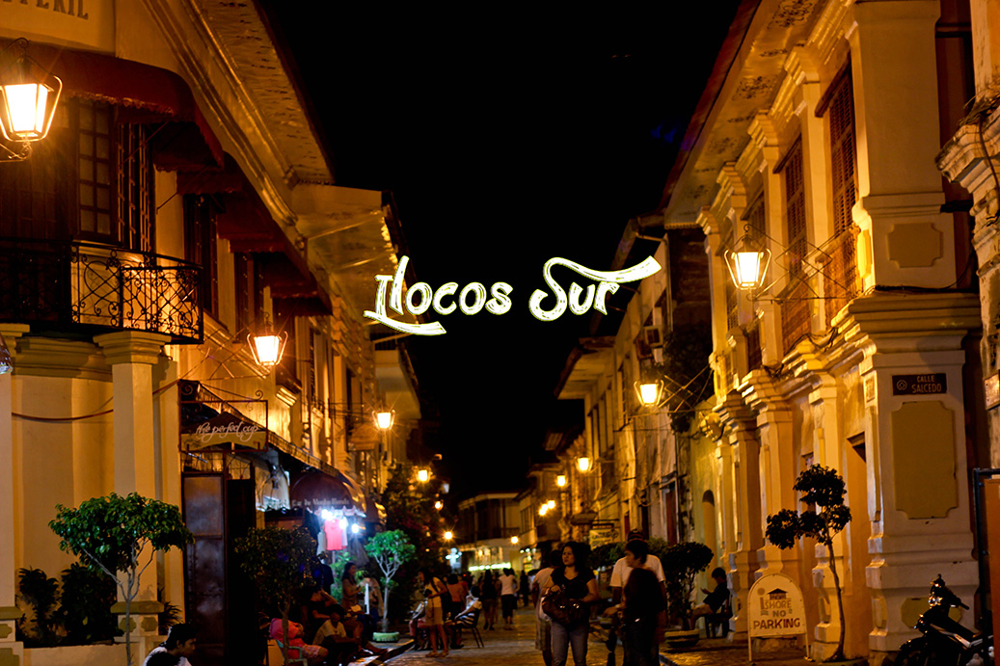
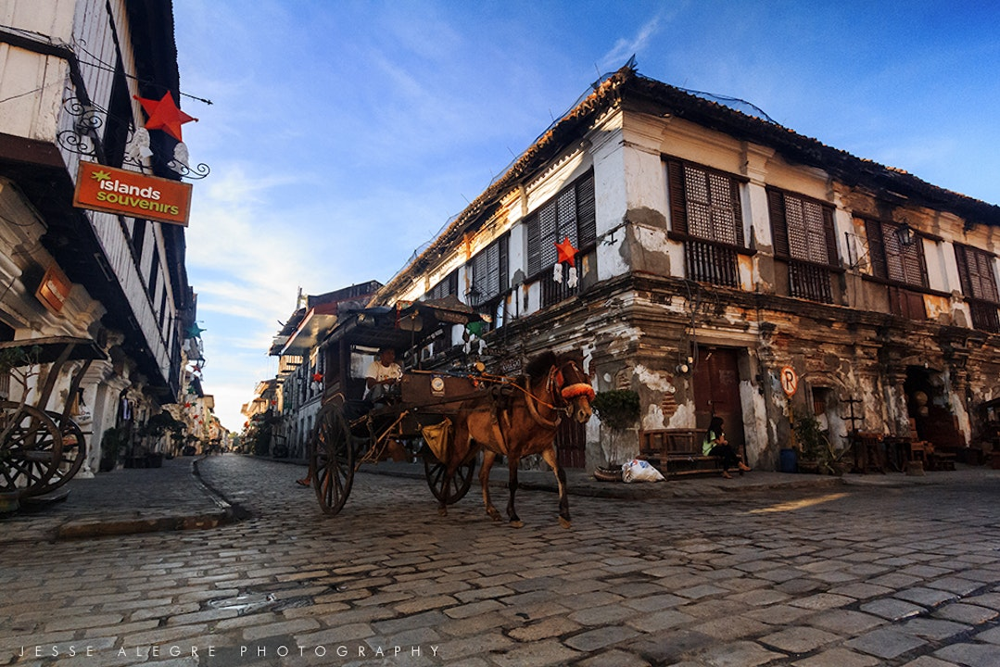
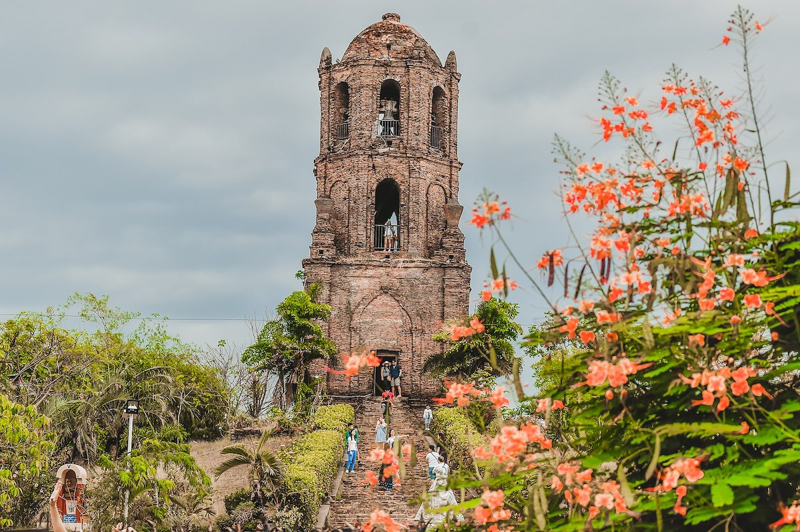
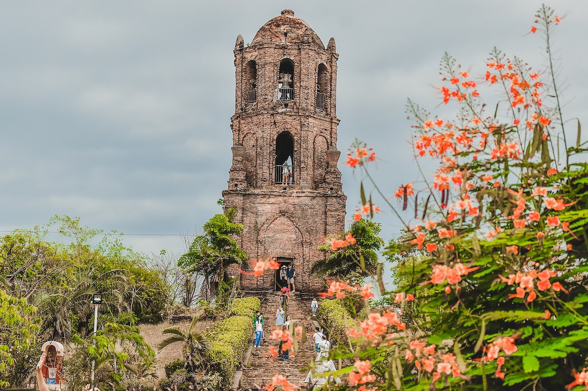

Places to visit in the Philippines
HOME
BAGUIO
PALAWAN
VIGAN
MANILA

Founded in 1572, Vigan City is famous for its well-preserved Spanish colonial town in Asia
and because of its beauty and charm it has been considered one of the seven wonder cities in the world.
Hop in on a calesa- a horse driven carriage to stroll around the city.

 
